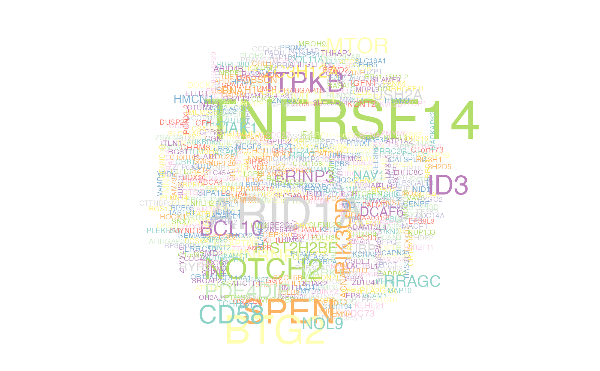

prettyGeneCloud.RdMake a word cloud of gene names from a MAF file based on mutation frequency.
prettyGeneCloud(
maf_df,
these_genes,
other_genes,
these_genes_colour = "#B2DF8A",
other_genes_colour = "#bc42f5",
colour_index
)A MAF-format data frame containing the mutations you want to summarize in a gene word cloud
An optional vector of gene symbols (defaults to all lymphoma genes)
An optional second vector of gene symbols to include in your cloud in a second colour
Specify the hex code of a colour to use for the first set of genes
Specify another hex code of a colour to use for the second set of genes
Optional named character vector with a name for each gene in these_genes and a colour as the value
data frame with counts for each gene
Create a wordcloud from an incoming MAF. Required parameter is `maf_df`. Optional parameters are `these_genes`, `other_genes`, `these_genes_colour`, `other_genes_colour` and `colour_index`. If no genes are supplied when calling the function, this function will default to all lymphoma genes.
#get all coding SSM
maf = GAMBLR.data::sample_data$grch37$maf
#get gene symbols from MAF
maf_genes = dplyr::filter(maf, Hugo_Symbol != "Unknown")
maf_genes_chr1 = dplyr::filter(maf_genes, Chromosome == "1")
my_genes = maf_genes_chr1$Hugo_Symbol
#build wordcloud
prettyGeneCloud(maf_df = maf, these_genes = my_genes)

#> # A tibble: 1,234 × 2
#> Hugo_Symbol n
#> <fct> <int>
#> 1 ACADM 1
#> 2 ACBD3 1
#> 3 ACBD6 1
#> 4 ACOT7 1
#> 5 ADAM30 1
#> 6 ADAMTS4 1
#> 7 ADSS 1
#> 8 AK2 1
#> 9 AKNAD1 1
#> 10 AL139147.1 1
#> # ℹ 1,224 more rows